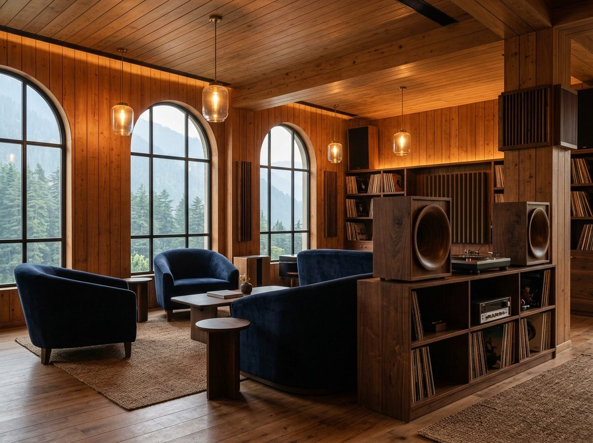

Coffee & Brewing
Coffee, specialty brews, beans, etc.


 Gabbar (“Gabbu”) • Manali
Gabbar (“Gabbu”) • Manali
“A Dog Behind the Good Times.” In the hills of Manali.


“First rule of the hills: warm your hands before you choose your room.”
Coffee & brewing, all-day kitchen dining, freshly baked offerings, and live music & gatherings.
Coffee, specialty brews, beans, etc.
Food / all-day dining from the actual Gabbu’s menu.
Freshly baked offerings from Gabbu’s.
Music, gatherings, nights and events.
Meet the German Shepherd who inspired our sanctuary, step into our coffee roastery, collect stamps in your passport, or open the house menu.
Discover how Gabbar (“Gabbu”) arrived in the hills of Manali and became the quiet miracle behind everything we build.
A physical booklet stamped at the table—unlocking free beverages, desserts, and starters across 10 visits.
GABBU’S PASSPORT ✦ 03 • RESTAURANT SANCTUARIESSelect your dining sanctuary—Manali or Zirakpur—featuring wood-fired pizzas, clay tandoori platters, gourmet burgers, curries, and dog meals.
SELECT LOCATION →“Real words from people who found their way to Gabbu’s.”
ChIJJb47dDqHBDkRX1vRrMeMFCQ
Currently displaying the 3 real verbatim Google Reviews retrieved directly from Google Maps’ live database for Gabbu’s Cafe, Clubhouse Rd, Old Manali (with exact Google Review IDs, 5★ ratings, official contributor avatars, and direct Google Maps review links). To unlock all 5 live reviews with full authorAttribution.displayName and relativePublishTimeDescription from places.googleapis.com/v1, enter your Google Places API (New) key below or set GOOGLE_PLACES_API_KEY in your server environment: